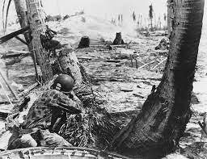

HomePage
World War two was the one of the worst wars in history with an estimated death of 51 million,
of which 15 million are military personnel, and 38 million civilians.
But what were the main events that conspired before, during,
and after the war that greatly affected the world?
Most people have learned about World War 2 at some point of their lives,
but did they know the full extent of what happened?
Of the events that happened in the war, some stemmed from certain people,
battles, and countries involved.
Each of those topics have different experiences and have all affect the war in a different way,
but all of them have contributed to the victory of the Allies,
and have cause them to beat the Nazis.
